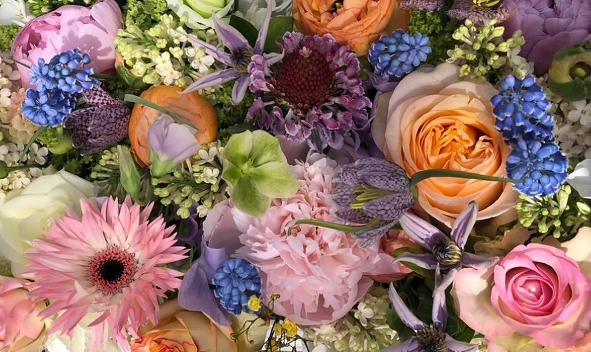
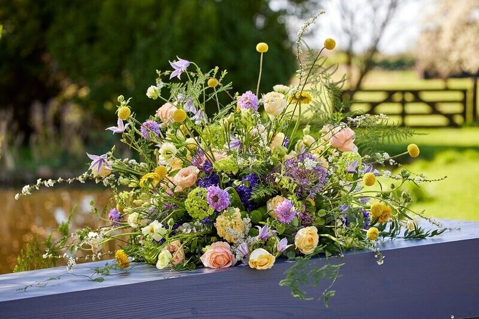
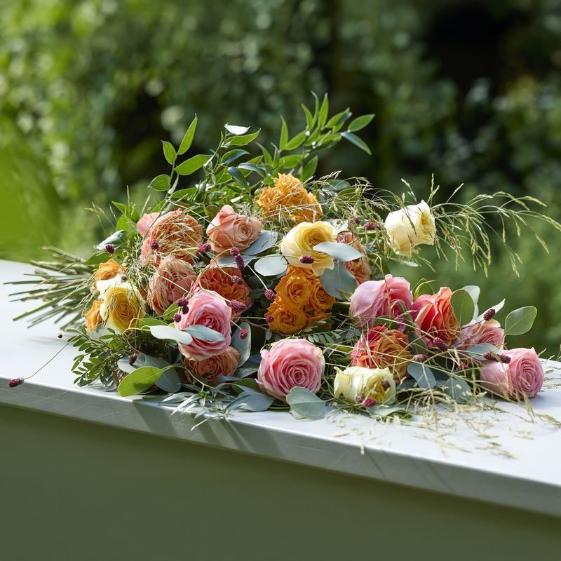
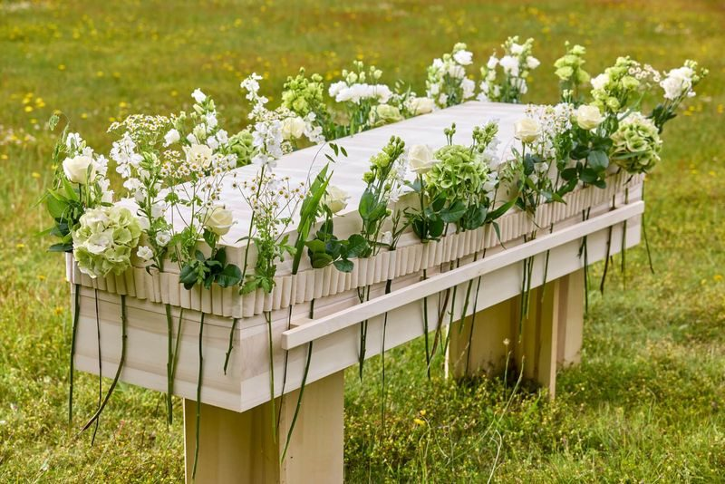
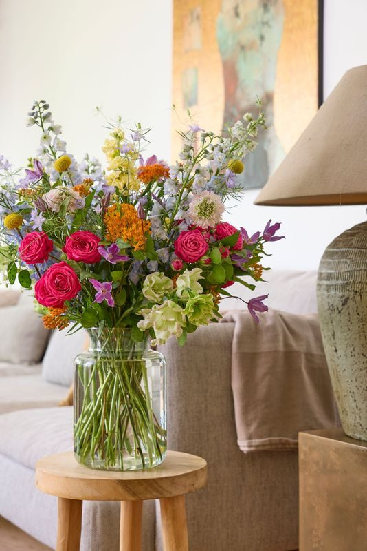
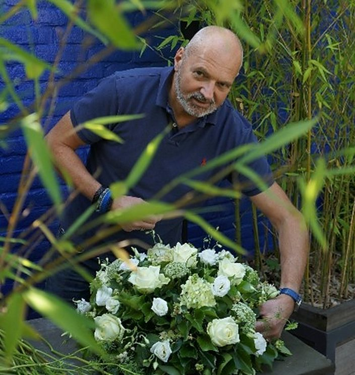
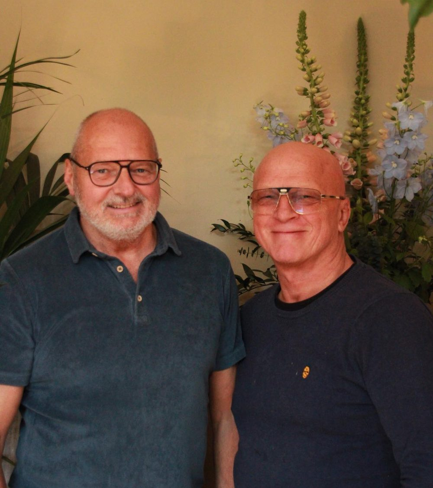

Bloemen voor een afscheid dat bij de persoon past
Al meer dan 30 jaar een begrip in Roosendaal en omgeving. Wij maken voor elke uitvaart een bloemstuk dat past bij wie iemand was.
Ons assortiment
Modern, klassiek, stoer, liefelijk of exotisch. Kleurrijk of juist ingetogen, eventueel met een bijpassend lint of een mooie kaart. Bekijk de collectie en bestel online, of bel ons voor iets op maat.

Rouwboeketten
Losse boeketten om op of bij de kist te leggen.

Rouwstukken
Gebonden stukken in alle stijlen en kleuren.

Bloemenband
Een band van bloemen die de kist omarmt.

Troostboeketten
Een boeket in vaas, als steun voor de familie.
Speciale wensen of gewoon iets vragen?
Een lievelingsbloem, een kleur die bij iemand hoorde of een tekst op het lint. Bel ons gerust, dan bespreken we samen wat past.

Persoonlijk, ook in een moeilijke tijd
Een uitvaart regel je nooit zomaar even. Daarom nemen we de tijd voor u: aan de telefoon of bij ons op afspraak.
"Mensen steunen in de moeilijkste periode van hun leven, het verliezen van een dierbare. En bloemen spelen daar zeker een belangrijke rol in."
- Bel of mail onsOf kies alvast iets uit het assortiment online.
- We bespreken uw wensenTelefonisch of op afspraak aan de Nispensestraat 73.
- Wij maken het bloemstukMet de hand gebonden, passend bij de persoon.

Het verhaal van Wilde Wingerd
Rob Kolderie en Frank Hop begonnen Wilde Wingerd in 1994. Rob werkte toen al zo'n 8 jaar als bloembinder in Breda en had net zijn Meesteropleiding afgerond. Frank nam het zakelijke deel op zich, Rob de creatieve kant.
Samen deden ze van alles: de schouwburg en het oude raadhuis aankleden bij het bezoek van Willem-Alexander en Máxima, modeshows, grote bruiloften en mooie uitvaarten. Na ruim 30 jaar zijn ze gestopt met de winkel. Rob gaat verder met waar hij goed in was en is: bloemen voor uitvaarten.
Neem gerust contact op
Bel ons of stuur een mail. Langskomen kan op afspraak.
Bel ons direct
Speciale wensen of gewoon iets vragen? Aan de telefoon denken we meteen met u mee.
06 19 61 77 16Adres
Wilde Wingerd Uitvaartbloemist
Nispensestraat 73
4701 CT Roosendaal